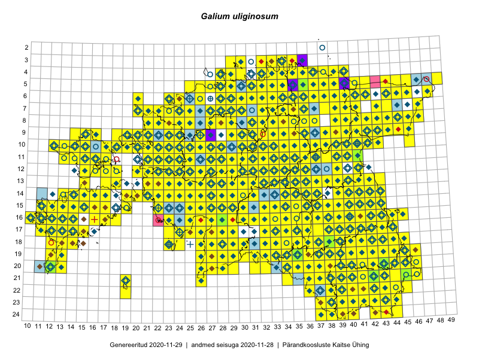

Galium uliginosum
Uuendatud: 2016-12-02
Kaardile koondatud taksonid: Galium uliginosum L.

Kaart põhineb 576 vaatlusel. Taksonit on leitud 395 ruudust.
Kuvatud viited 20 esimesele andmebaasikirjele, ülejäänud PlutoFis
- Thea Kull: 2015-07-07: 16-40: ala
- Malle Leht: 2015-08-02: : ala
- Toomas Kukk, Eerik Leibak: 2015-08-10: 09-14: ala
- Peedu Saar, Toomas Kukk: 2015-05-26: 10-17: ala
- Rein Kalamees, Kersti Püssa: 2015-08-04: 03-33: ala
- Rein Kalamees, Kersti Püssa: 2015-08-09: 05-31: ala
- Tiit Hallikma, Toomas Kukk: 2015-07-21: 05-45: ala
- Ott Luuk, Toivo Sepp: 2015-07-29: 09-31: ala
- Peedu Saar, Ott Luuk: 2015-06-21: 14-41: ala
- Peedu Saar, Ott Luuk: 2015-06-21: 14-42: ala
- Ott Luuk, Peedu Saar: 2015-07-27: 11-35: ala
- Peedu Saar: 2015-07-04: 18-45: ala
- Peedu Saar: 2015-07-04: 18-44: ala
- Peedu Saar: 2015-07-14: 15-38: ala
- Peedu Saar: 2015-07-15: 15-39: ala
- Ott Luuk, Peedu Saar: 2015-08-13: 24-44: ala
- Ott Luuk, Peedu Saar: 2015-08-13: 24-43: ala
- Tiit Hallikma, Toomas Kukk: 2015-07-22: 05-49: ala
- Peedu Saar, Eerik Leibak: 2015-07-30: 15-42: ala
- Peedu Saar, Eerik Leibak: 2015-07-30: 16-41: ala